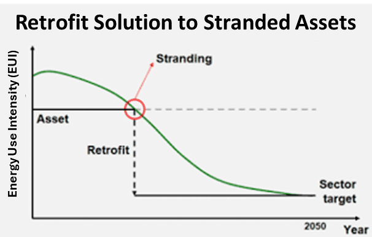
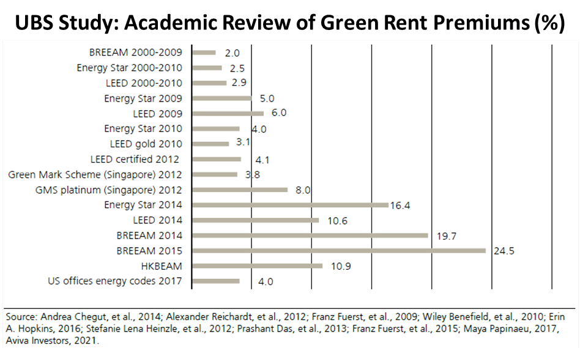
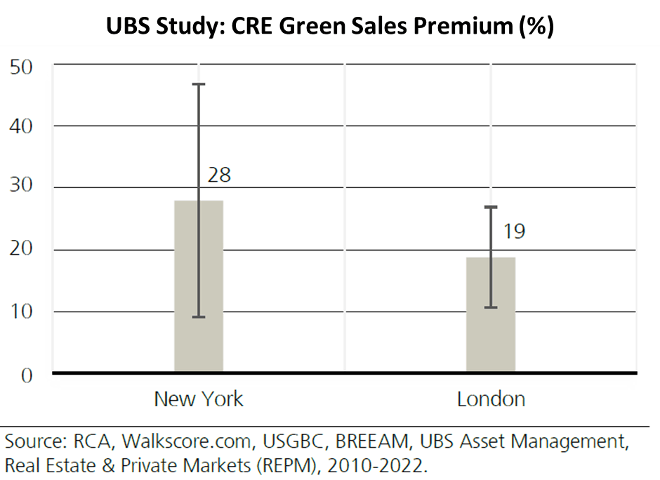

Thought Leadership in Commercial Real Estate and Capital Markets
Capital Markets: Stranded Assets and the Financial Risk Multiplier in CRE
Evan Campbell, CFAJan 28, 20255 min read
The High Cost of Inaction
Up to 75% of Belfast’s office stock may be obsolete by 2030 without significant retrofits - a stark warning of the stranded asset crisis reshaping commercial real estate (CRE) [1].
In the evolving landscape of CRE, the term stranded assets has gained urgency. These are properties that prematurely lose value or become economically unviable, often due to forces beyond their owners’ immediate control. While the concept was once an academic concern, it has grown into a tangible financial risk multiplier, with significant implications for investors, tenants, and lenders alike.
The pressures driving this phenomenon in CRE come from two distinct fronts:
Accelerating market forces. Tenant demand increasingly favours modern, sustainability-focused properties designed to attract and retain employees accustomed to hybrid work environments. Meanwhile, institutional investors view sustainable assets as safer, lower-risk bets, creating a widening gulf in the market between compliant and non-compliant properties.
A tightening regulatory landscape. Governments, particularly in Europe, are setting ambitious energy efficiency and sustainability standards that many existing assets cannot currently meet. For example, the European Union’s Energy Performance of Buildings Directive (EPBD) mandates that all buildings achieve near-zero energy standards by 2050, with interim targets for 2030 and beyond. Non-compliance can leave properties effectively stranded, excluded from commercial leasing or financing opportunities.
For CRE investors, stranded assets represent more than just a compliance challenge, they signal an inflection point for capital allocation, tenant retention, and long-term portfolio performance.

"Stranding Risk & Carbon ", CRREM, 2019
The Economic Risks of Stranded Assets
Escalating Retrofit Needs: Non-compliant properties face mounting capital requirements to meet new energy standards. In the UK, 70% of commercial floor space risks becoming non-compliant with the EPC B rating target set for 2030, threatening to remove these properties from the leasing market entirely [2]. This also increases the likelihood of tenant flight as businesses prioritize sustainable, environmentally efficient properties that align with their own environmental commitments - a trend that’s already contributing to widening valuation gaps between compliant and non-compliant assets. Recent analysis by Cushman & Wakefield shows that retrofitting logistics properties to meet sustainability standards costs an average of €113 per square meter, while generating annual energy savings of €15 per square meter - a payback period of 7.5 years. For long-term investors, these opex savings alone may justify the investment, but this assessment may not suit all investors, and the longer retrofits are delayed the higher the risks of obsolescence. This growing need for active management has been succinctly captured by Keith Breslauer of Patron Capital:
"In the old days, stranded assets largely came about because they were overleveraged. Now it is much worse, in the sense that you need active asset management to avoid stranding. It's not just about capital structure. The underlying asset itself may be flawed." - Keith Breslauer, Managing Director of Patron Capital [3]
Tenant Flight and the “Green Premium”:The shift in tenant preferences is reshaping CRE demand. Companies vying for top talent are prioritizing high-quality spaces that meet both sustainability benchmarks and workplace flexibility needs. Buildings with strong sustainability credentials (i.e. energy efficiency, natural light, and amenities) are commanding higher rents and lower vacancy rates. According to Coima’s CIO Gabriele Bonfiglioli, in Milan’s Porta Nuova district, sustainable Grade A office spaces have seen greenrents increase by 30% since pre-pandemic levels, with near-zero vacancy rates [4]. This trend has long been noted but has quantitatively accelerated since the pandemic:

"Green Premium", UBS Real Estate & Private Markets, 2023 This growing "green premium" highlights a bifurcated market: creating a widening valuation gap that increasingly defines winners and losers in institutional real estate portfolios.
Regulatory Pressures:The regulatory environment is becoming more restrictive, particularly in Europe. The EPBD sets binding energy efficiency requirements, including mandatory near-zero energy compliance for all buildings by 2050, with interim deadlines looming in 2030. This legislation threatens to sideline thousands of assets without significant upgrades. Beyond the EU, similar initiatives are taking root worldwide. Canada, for instance, has committed to achieving net-zero emissions by 2050 and aims to reduce emissions by 40% to 45% below 2005 levels by 2030, necessitating significant decarbonization efforts across all industries, including real estate [5].
Pricing Divergence: Pricing is increasingly reflecting stranded asset risks, creating broader implications for portfolio performance [6]. Green-certified logistics properties are achieving over a+20% green valuation premium in secondary markets compared to uncertified alternatives [7]. For investors, this bifurcation raises critical questions about portfolio-level NAVs, risk ratings, and the ability to secure financing. As stranded assets lose liquidity, their drag on portfolio valuations becomes harder to ignore.

"Green Premium", UBS Real Estate & Private Markets, 2023 The trend reflects a growing “flight to quality” as investors prioritize ESG-compliant assets. Non-compliance leaves properties stranded, unable to secure leases or optimal financing.
Mitigating Stranded Asset Risks: A Strategic Playbook
Retrofit Early and Manage Actively: Early retrofitting, paired with robust asset management strategies, can mitigate long-term risks while unlocking energy savings. Leading the way is Vonovia, a major German residential property group, which plans to invest €1.2 billion in 2025 into retrofits alone, focusing on solar installations and heat pump rollouts. Focusing on upgrading asset sustainability ensures competitiveness in both leasing and financing markets. As highlighted in KKR’s Outlook for 2024, decarbonization is becoming a central pillar of real asset strategies, with the “brown-to-green” conversion of properties seen as an essential lever for driving long-term value. This approach underscores the importance of proactive retrofitting and aligning portfolios with regulatory and market expectations to mitigate stranded asset risks. In 2024, Jan Plückhahn, head of Swiss Life Asset Managers Germany, echoed this underlying focus, emphasizing a strategic pivot toward resilient sectors like logistics and life sciences, where tenant and investor demand for ESG-compliant properties continues to grow [8].
Use Innovative Financing Tools: Sustainability-linked financing instruments, including green bonds and tax incentives, are gaining traction in commercial real estate [9]. Increasingly, lenders are requiring sustainability certifications as prerequisites for competitive long-term loan terms [10]. Stranded assets risk escalating costs of capital and limited refinancing options.
Advanced Risk Monitoring: Tools like the Carbon Risk Real Estate Monitor (CRREM) provide a framework for identifying at-risk properties and creating decarbonization plans. By quantifying stranded asset risks, these tools help investors prioritize upgrades and align portfolios with evolving standards.
From Risk to Resilience: The Investor Opportunity
Stranded assets represent more than a challenge, they’re a pivot point for commercial real estate investment strategy. Investors who adopt proactive approaches, including early retrofits, ESG-aligned asset management, and innovative financing, can safeguard value while tapping into rental and pricing premiums.
As regulation tightens and market expectations rise, resilience is quickly becoming a prerequisite for performance. Stranded assets are not just risks to be avoided, they are opportunities to drive growth, enhance environmental impact, and future-proof portfolios in an evolving market.